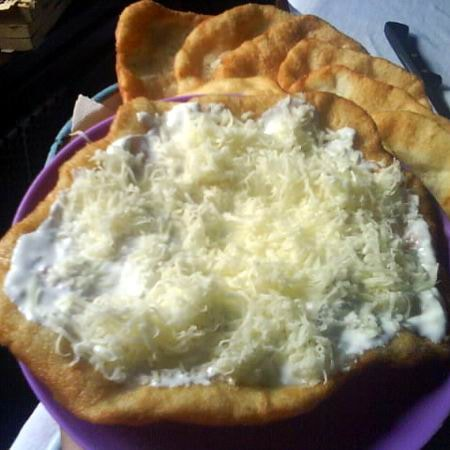

Kedvenc ételem:
Sajtos-tejfölös házi lángos
Vakarék, bukti, bodag, langalló, vagy ha úgy tetszik lángos. Ki gondolná, hogy ez a tészta létezett már akkor is, amikor a Könyvek Könyve íródott? Egy kicsit utánajártunk, hogyan alakult a világszerte magyaroknak tulajdonított lángos története, miközben kiderült az is, hogy még lángos-zarándokút is létezik. A népszerű étel sok formában létezik. Itt egy recept az igazi klasszikusról.

Hozzávalók: |
|
A lángoshoz: |
|
|
liszt |
65 dkg |
|
víz |
2,5 dl |
|
tej |
2,5 dl |
|
só |
1 kk |
|
élesztő |
3 dkg |
A tetejére: |
|
|
házi tejföl |
10-20 dkg |
|
reszelt sajt |
ízlés szerinti mennyiségben |
|
fokhagyma |
4-5 gerezd |
|
víz |
0,3 dl |
|
só |
egy csipetnyi |